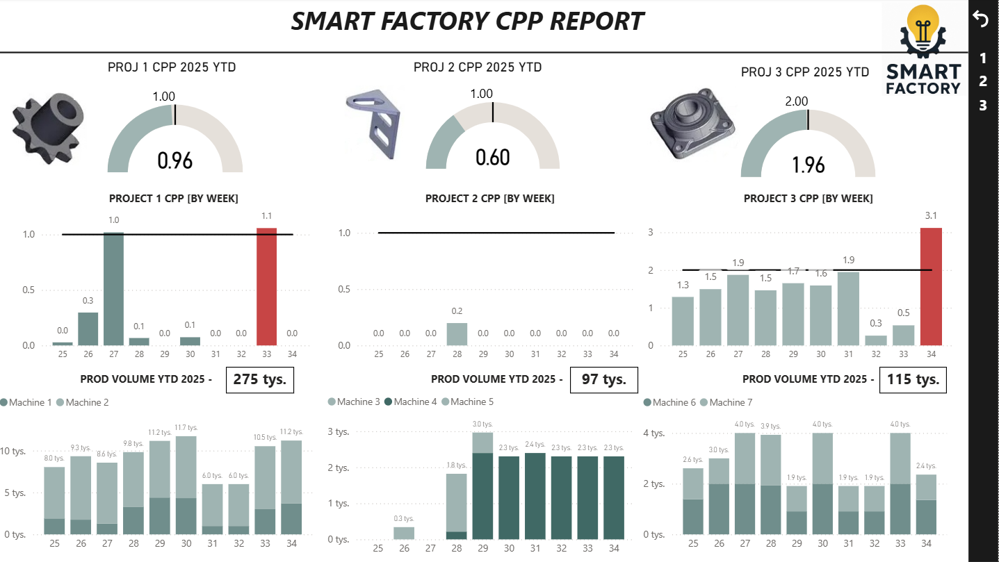
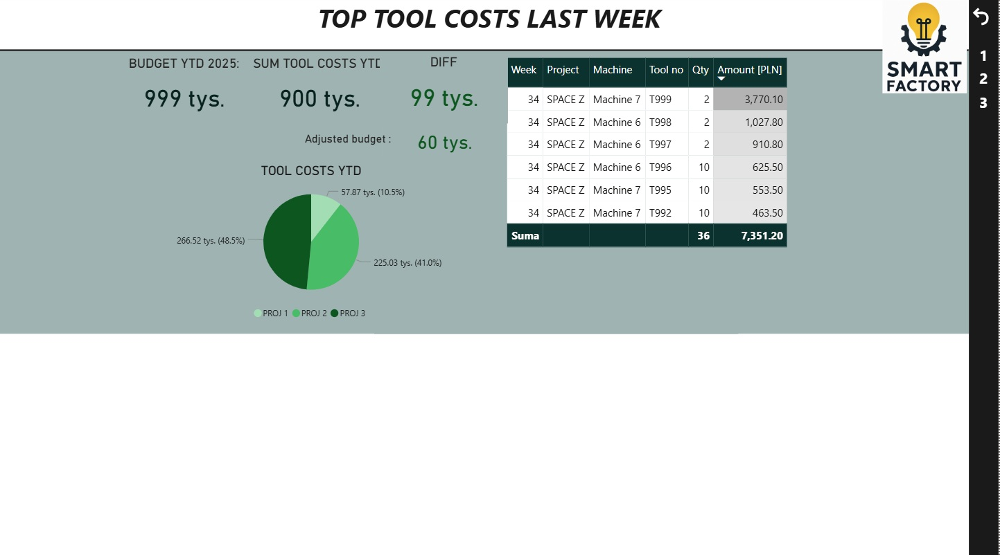
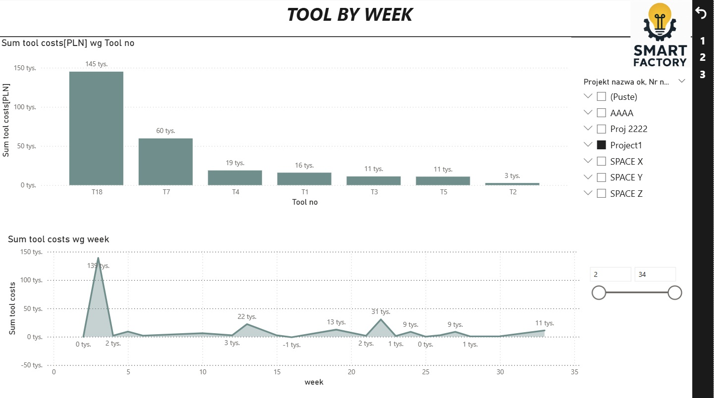
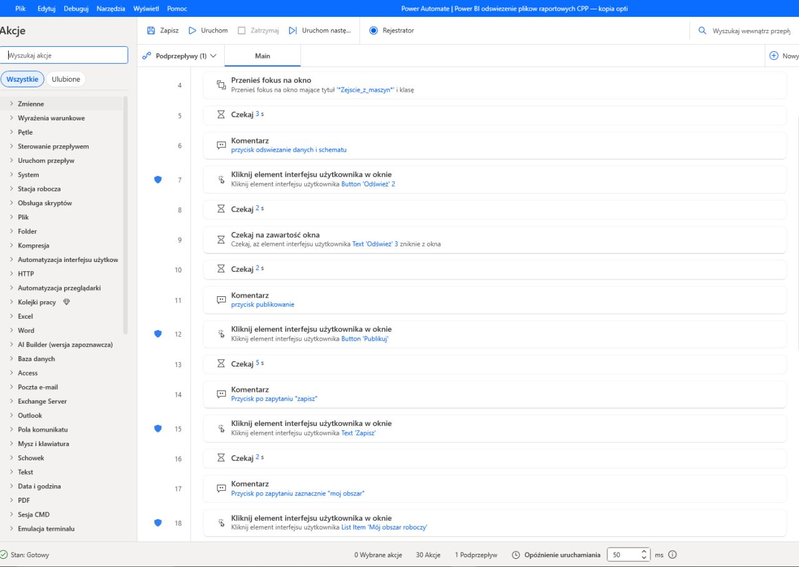

Cyfryzacja i Optymalizacja Kosztów Narzędziowych (CPP) w Automotive
Autorski projekt wdrożony w branży automotive (2025–2026), odpowiadający na kluczowe wyzwanie: gdzie faktycznie powstają ukryte straty i jak systemowo je ograniczać? Tradycyjne raportowanie oparte na rozproszonych plikach Excel zastąpiono w pełni zautomatyzowanym ekosystemem analitycznym o wysokim ROI.
Wyzwanie inżynieryjne i stan wyjściowy
W procesach obróbki CNC kluczowym wyzwaniem była kontrola kosztów narzędziowych w przeliczeniu na detal (CPP – Cost Per Part). Stan wyjściowy charakteryzował się wysoką pracochłonnością: technolog ręcznie przepisywał koszty i dane narzędziowe z szaf, a tradycyjne przygotowanie cyklicznych analiz zajmowało od 2 do 5 godzin manualnego zbierania danych z rozproszonych plików Excel i dysków lokalnych. Brak zintegrowanego systemu generował ryzyko błędów ludzkich i uniemożliwiał bieżącą reakcję na anomalie kosztowe.
Architektura rozwiązania i stos technologiczny
- Power BI Dashboard: Integracja 6 źródeł danych, stworzenie ponad 20 miar DAX oraz kilkunastu kolumn obliczeniowych dla precyzyjnego śledzenia CPP w ujęciu tygodniowym i rocznym.
- Ewolucja i prezentacja raportu: Ze względu na poufność danych konstrukcyjnych, design raportu ewoluował z czasem, a publikowane materiały obejmują wyłącznie bezpieczne screeny poglądowe. Gotowy dashboard regularnie trafiał na spotkania high managementu jako kluczowe narzędzie wspierające decyzje zarządzace.
- Power Automate (Online & Desktop / RPA): Automatyczny odbiór wiadomości e-mail z szaf narzędziowych i porządkowanie załączników w chmurze. Ponadto dedykowany robot RPA omija ograniczenia dysków sieciowych – automatycznie uruchamia Power BI, zaciąga dane lokalne, wymusza odświeżenie modelu i publikację raportu bez ingerencji człowieka.
Rezultaty biznesowe
Wdrożenie 100% potencjału dostępnych narzędzi wyeliminowało błędy ludzkie, drastycznie skróciło czas przygotowania raportów zarządczych (z 5 godzin do 5 minut) i udowodniło, że podejście data-driven połączone z automatyzacją przynosi najwyższy zwrot z inwestycji (ROI) w nowoczesnej produkcji.



